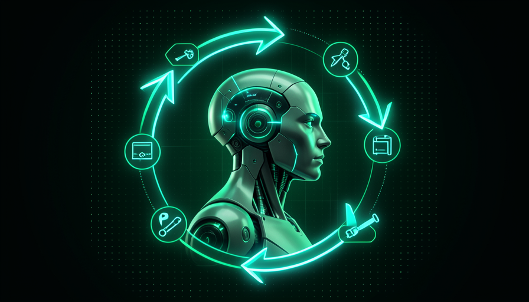

💡 Novo aqui? Três palavras antes de começar
- Agente — uma IA que recebe um objetivo e executa os passos sozinha até concluir, em vez de só responder uma mensagem.
- Ferramenta — uma ação que o agente consegue fazer no mundo real: buscar na web, abrir um arquivo, rodar um comando.
- Loop — o ciclo em que o agente repete "olhar, decidir, agir" várias vezes até a tarefa ficar pronta.
🆚 Agente vs. chatbot
Você já conversou com um chatbot: você pergunta uma coisa, ele responde uma coisa, e a conversa para ali. Cada mensagem é um round isolado. Útil pra tirar dúvida — mas a partir daí o trabalho continua sendo seu.
Um agente é outra coisa. Você não dá uma pergunta, você dá um objetivo — e ele executa os passos sozinho até chegar lá. Ele não para depois de uma resposta: ele continua trabalhando, passo a passo, até a tarefa estar concluída.
🔑 A analogia do atendimento
Pense em chegar numa loja e em dois tipos de pessoa pra te ajudar:
- •Chatbot = o atendente do balcão de informações: "onde fica X?" → ele aponta. Você vai e resolve.
- •Agente = o assistente pessoal: "resolve esse problema pra mim" → ele anda a loja, escolhe, paga, embrulha e te entrega pronto.

Conceitos-chave
🧩 Como ele "pensa"
"Pensar" aqui é só um jeito fácil de falar. Por baixo, o agente repete um ciclo bem simples, três passos que giram em volta: observar a situação, decidir o próximo passo e agir. Aí ele olha o resultado e recomeça.
Cada volta no ciclo aproxima um pouco do objetivo. É a mesma coisa que você faz ao montar um móvel: olha a peça, decide onde encaixa, aparafusa, confere — e parte pra próxima. O agente faz isso muito rápido e sem cansar.
💡 Dica pra fixar
Quando você ver o agente "demorando", lembre que ele não travou — ele está dando voltas nesse ciclo. Cada volta é um passinho que ele dá no seu lugar.
Conceitos-chave
🛠️ Ferramentas: as mãos do agente
Sozinha, uma IA só fala: ela produz texto. Pra ela fazer algo no mundo, precisa de ferramentas — ações concretas que alguém deu pra ela usar. Sem ferramentas, é um cérebro sem mãos.
As ferramentas mais comuns são simples de entender: buscar uma informação na web, abrir e editar um arquivo, ou rodar um comando no computador. É a ferramenta que transforma "eu sugeriria fazer X" em "X foi feito".
📊 Exemplos do dia a dia
- •Buscar na web: conferir o preço atual de um produto antes de escrever um e-mail de proposta.
- •Abrir/editar arquivo: pegar sua planilha, corrigir uma coluna e salvar de volta.
- •Rodar um comando: testar se o site que ele montou abre de verdade.
No módulo 1.3 você vai ver de onde vêm essas ferramentas (skills e MCP). Por ora, basta saber: são as mãos.
Conceitos-chave
🔁 O loop: tenta de novo sozinho
Aqui está a parte que mais surpreende quem é leigo: quando um passo dá errado, o agente percebe e tenta outro caminho — sem você pedir. Ele não desiste no primeiro tropeço; ele volta ao ciclo, observa o que falhou e ajusta.
É exatamente isso que dá a sensação de que ele "está trabalhando de verdade". Igual a um funcionário: se a primeira porta está trancada, ele não te liga perguntando o que fazer — ele tenta a próxima.
🎯 Recebe o objetivo
"Encontre e baixe o relatório de vendas de maio."
⚙️ Tenta o primeiro caminho
Procura na pasta esperada… o arquivo não está lá.
👀 Percebe a falha e re-decide
"Não achei aqui. Vou buscar pelo nome em todo o sistema."
✅ Conclui SEM VOCÊ PEDIR
Encontra o arquivo na outra pasta, baixa e te avisa que terminou.
🎯 Por que isso importa pra você
Esse "tentar de novo sozinho" é o que separa uma ferramenta de um colega. Mas atenção: tentar muito não garante acertar. Por isso o próximo tópico é sobre os erros — e por que você ainda confere.
Conceitos-chave
⚠️ Quando o agente erra
O agente é rápido e persistente — mas não é infalível. Dois erros são comuns. O primeiro é alucinar: inventar uma informação com toda a confiança, como se fosse verdade. O segundo é seguir firme por um caminho errado, repetindo a mesma decisão ruim com convicção.
Por isso o maestro existe: quem confere o resultado é você. Não precisa entender como ele fez — precisa olhar se o que saiu faz sentido. Aprender a "farejar" um resultado suspeito é meio caminho andado.
✓ Sinais de bom resultado
- ✓Bate com o que você sabe ser verdade
- ✓Mostra a fonte ou o passo que tomou
- ✓Admite quando não tem certeza
- ✓O resultado abre e funciona de verdade
✗ Sinais de alerta
- ✗Dados muito específicos sem fonte nenhuma
- ✗Confiança alta demais pra coisa duvidosa
- ✗Insiste no mesmo erro várias vezes
- ✗Nomes/links que parecem "bons demais"
💡 Dica prática
Diante de um número ou nome que você não conhece, pergunte ao próprio agente: "de onde você tirou isso? me mostre a fonte." Se ele empacar ou inventar, era alucinação.
Conceitos-chave
⚙️ Agente vs. automação fixa
"Mas isso não é só uma automação?" Não exatamente. Uma automação fixa segue um trilho: faz exatamente os passos que alguém programou, na ordem programada. Se a situação muda, ela quebra ou faz besteira — porque não sabe improvisar.
Um agente se adapta. Quando a situação muda, ele percebe e escolhe outro passo. A automação é um trem no trilho; o agente é um motorista que desvia do buraco. Cada um serve pra uma coisa.
✓ Use um agente quando…
- ✓A tarefa muda de caso pra caso
- ✓É preciso decidir no meio do caminho
- ✓Imprevistos são a regra, não a exceção
- ✓Você quer descrever o objetivo, não cada passo
✗ Prefira automação fixa quando…
- →Os passos são sempre os mesmos
- →Você precisa de previsibilidade total
- →O volume é enorme e repetitivo
- →Errar não pode acontecer nunca
📊 Regra de bolso
Trilho conhecido e fixo → automação. Caminho que muda e exige escolha → agente. Na vida real, os dois costumam trabalhar juntos: o agente decide, a automação executa o pedaço repetitivo.
✋ Antes de seguir — o que torna um agente diferente de um chatbot ou de uma automação fixa?
Conceitos-chave
🎓 Resumo do módulo
Próximo módulo:
1.3 — 🔌 Skills, MCP e o ecossistema: de onde vêm as ferramentas e os "talentos" do agente.